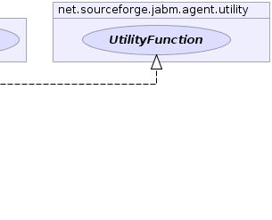

net.sourceforge.jabm.agent.utility.AbstractUtilityFunction
net.sourceforge.jabm.agent.utility.AbstractUtilityFunction
|
|||||||||
| PREV CLASS NEXT CLASS | FRAMES NO FRAMES | ||||||||
| SUMMARY: NESTED | FIELD | CONSTR | METHOD | DETAIL: FIELD | CONSTR | METHOD | ||||||||
java.lang.Object
public abstract class AbstractUtilityFunction
 |
 |
| Constructor Summary | |
|---|---|
AbstractUtilityFunction()
|
|
| Method Summary |
|---|
| Methods inherited from class java.lang.Object |
|---|
clone, equals, finalize, getClass, hashCode, notify, notifyAll, toString, wait, wait, wait |
| Methods inherited from interface net.sourceforge.jabm.agent.utility.UtilityFunction |
|---|
calculatePayoff |
| Constructor Detail |
|---|
public AbstractUtilityFunction()
|
|||||||||
| PREV CLASS NEXT CLASS | FRAMES NO FRAMES | ||||||||
| SUMMARY: NESTED | FIELD | CONSTR | METHOD | DETAIL: FIELD | CONSTR | METHOD | ||||||||